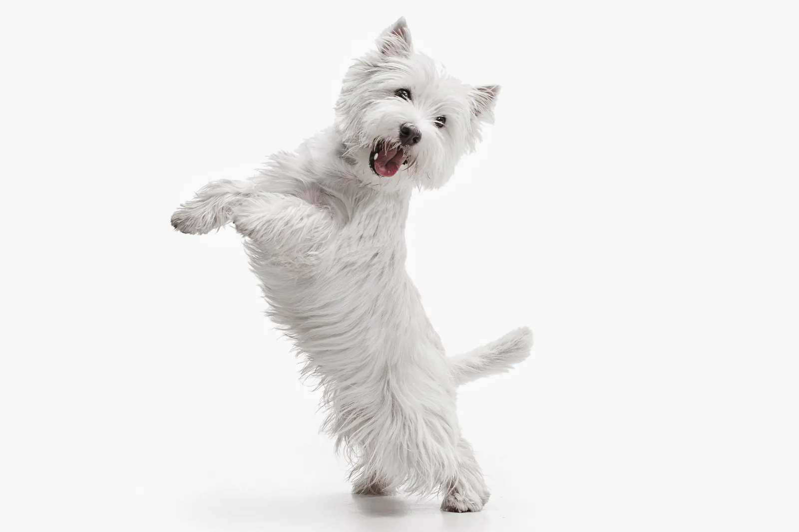
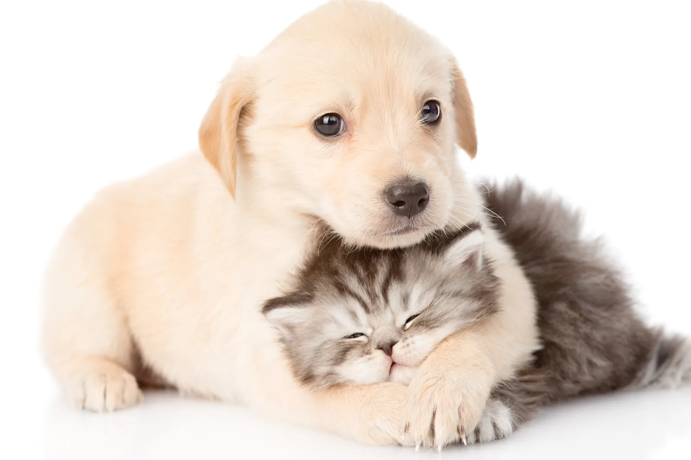
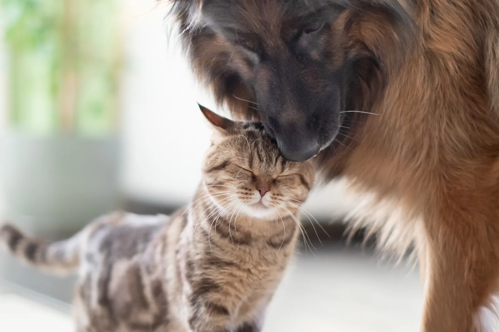

Blog
Tips y noticias
Las preguntas que más nos hacen sobre la alimentación de perros y gatos, respondidas por médicos veterinarios.
-

Día del Perro¿Es bueno humanizar a nuestras mascotas?
Veterinarios y especialistas en bienestar animal explican dónde está el límite entre cuidar y humanizar. -

Perras¿Cómo alimentar a una perra durante la gestación y el servicio?
Energía, omegas, el mito del calcio y cuándo cambia el apetito: lo que hay que saber para cuidar a la hembra y a la camada. -

Perros y gatos mayores¿Qué sucede en el organismo de perros y gatos de edad avanzada?
Los cambios que llegan con los años y por qué no hace falta un alimento distinto para cada etapa.
Consulte siempre con su Médico Veterinario de cabecera.